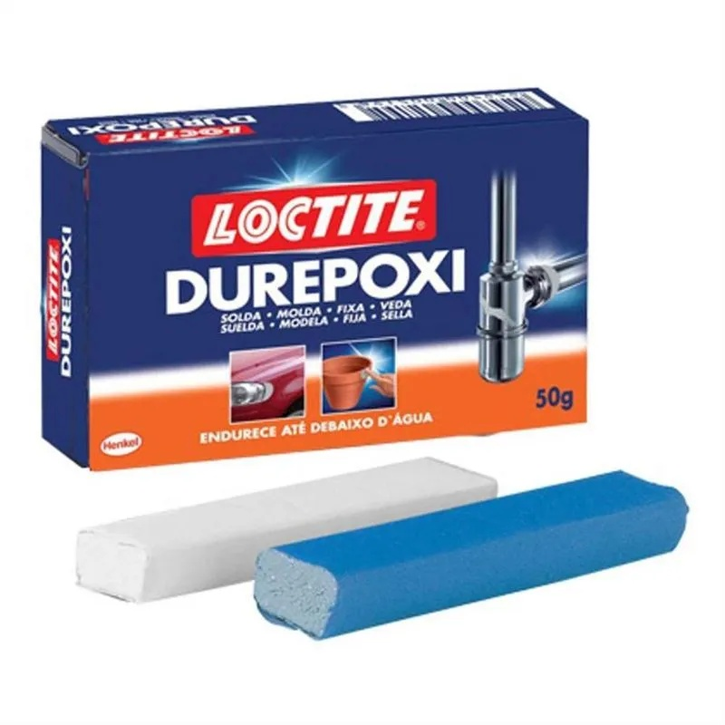
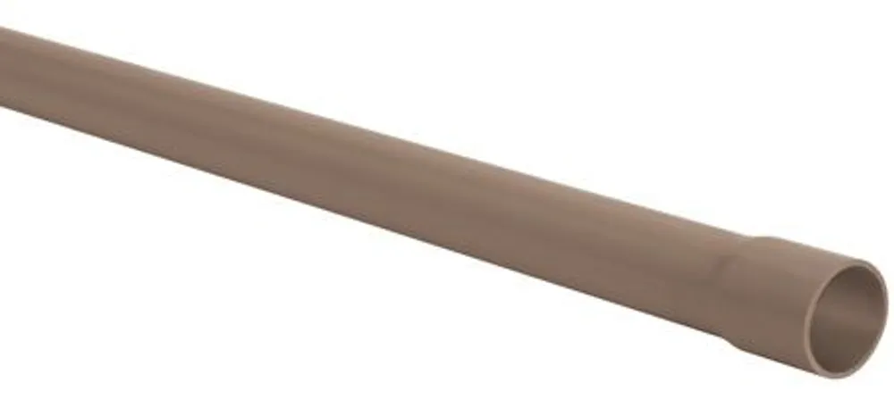
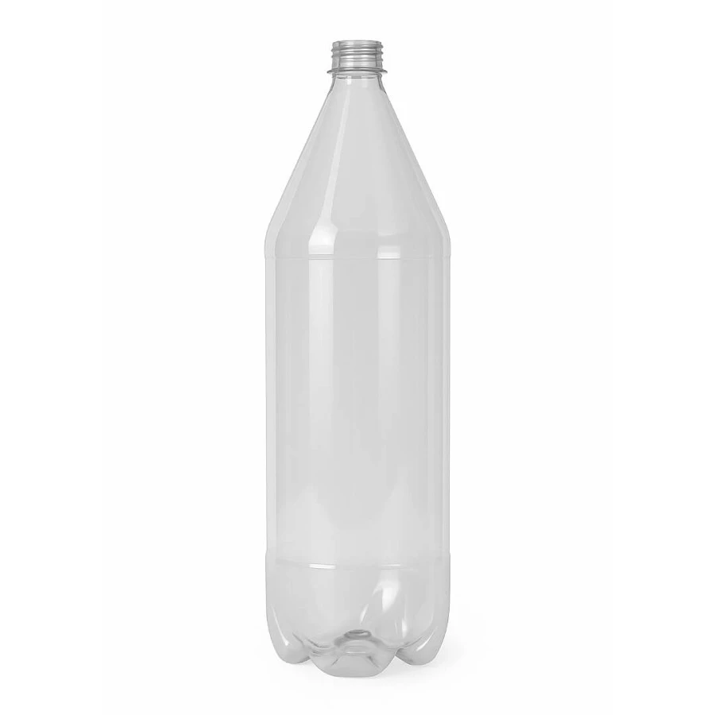
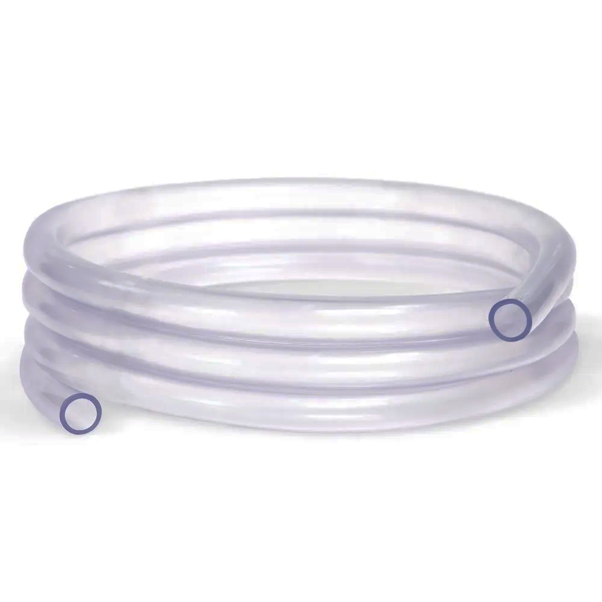

Lista de Componentes
Para a construção deste medidor de vazão, selecionamos materiais que permitem observar o princípio de Bernoulli de forma didática.
Células de Fluxo: Garrafas PET de 2L (Polietileno Tereftalato).
Garganta: Segmento de tubo de PVC rígido.
Manômetro: Mangueira de nível transparente (5/16").
Selagem: Massa Epóxi de alta densidade (Durepoxi).
A transparência da mangueira e das garrafas é vital para a instrumentação visual do desnível manométrico durante o teste de fluxo.

DURAPOXI
CANO PVC
GARRAFA PET
MANGEUIRA DE NIVELFIG 01: MATERIAIS SELECIONADOS